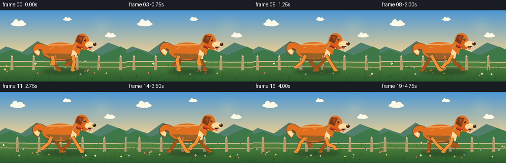
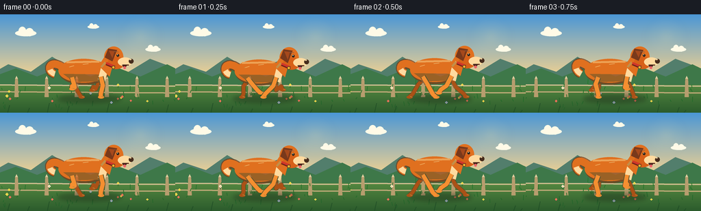

CODING AGENTS AS PIXEL WORLD MODELS
traex/GPT-5.6-Sol · instance_preservation_0000
点击播放 · 原生 RGB 像素
此结果可播放，但该运行尚未通过最终提交审核。页面展示不代表评测通过。
逐轮保存的候选
回放视频、检查图与代码变化。
每份候选均可单独播放。实际图片检查记录在下方工具轨迹中。
候选 01播放与检查图
点击播放 · 原生 RGB 像素


展开代码变化
--- 上一保存版本
+++ 本次保存版本
@@ -0,0 +1,241 @@
+from pathlib import Path
+import math
+import numpy as np
+from PIL import Image, ImageDraw, ImageFilter
+import artifact_io
+
+# Deterministic, hand-rendered 2-D animation. The scene is drawn large and
+# downsampled so that the small benchmark frames retain clean illustrated edges.
+W, H, N = 256, 144, 20
+SS = 4
+rng = np.random.default_rng(20261109)
+
+# Reusable scenery positions (world coordinates).
+flowers = [(float(rng.uniform(-40, 700)), float(rng.uniform(107, 137)),
+ int(rng.integers(0, 4)), float(rng.uniform(.55, 1.15))) for _ in range(55)]
+grass = [(float(rng.uniform(-30, 720)), float(rng.uniform(101, 143)),
+ float(rng.uniform(2, 8)), float(rng.uniform(-2, 2))) for _ in range(110)]
+
+
+def sc(v):
+ return int(round(v * SS))
+
+def pts(seq):
+ return [(sc(x), sc(y)) for x, y in seq]
+
+def ellipse(d, box, fill, outline=None, width=1):
+ d.ellipse(tuple(sc(v) for v in box), fill=fill, outline=outline, width=sc(width) if outline else 1)
+
+def polygon(d, xy, fill):
+ d.polygon(pts(xy), fill=fill)
+
+def line(d, xy, fill, width, joint='curve'):
+ d.line(pts(xy), fill=fill, width=sc(width), joint=joint)
+
+def bezier(p0, p1, p2, p3, steps=20):
+ out=[]
+ for t in np.linspace(0,1,steps):
+ u=1-t
+ out.append((u**3*p0[0]+3*u*u*t*p1[0]+3*u*t*t*p2[0]+t**3*p3[0],
+ u**3*p0[1]+3*u*u*t*p1[1]+3*u*t*t*p2[1]+t**3*p3[1]))
+ return out
+
+
+def make_background(frame):
+ # Luminous late-afternoon sky and gently graded meadow.
+ h, w = H*SS, W*SS
+ arr=np.zeros((h,w,3),dtype=np.uint8)
+ for yy in range(h):
+ y=yy/SS
+ if y < 91:
+ t=y/91
+ top=np.array([75,151,213.]); bot=np.array([241,210,145.])
+ c=top*(1-t)+bot*t
+ else:
+ t=(y-91)/(H-91)
+ top=np.array([96,148,70.]); bot=np.array([43,91,44.])
+ c=top*(1-t)+bot*t
+ arr[yy,:, :] = np.clip(c,0,255)
+ im=Image.fromarray(arr,'RGB')
+ d=ImageDraw.Draw(im)
+ shift=frame*1.6
+
+ # Sun glow behind the dog, subtle enough not to flatten the subject.
+ glow=Image.new('RGBA', im.size, (0,0,0,0))
+ gd=ImageDraw.Draw(glow)
+ for rad,alpha in [(30,5),(23,8),(16,14),(8,35)]:
+ ellipse(gd,(205-rad,33-rad,205+rad,33+rad),(255,238,174,alpha))
+ glow=glow.filter(ImageFilter.GaussianBlur(sc(5)))
+ im=Image.alpha_composite(im.convert('RGBA'),glow)
+ d=ImageDraw.Draw(im)
+
+ # Soft clouds (slow parallax).
+ for cx,cy,s in [(37-frame*.18,27,1.0),(223-frame*.12,51,.72),(136-frame*.1,18,.55)]:
+ col=(255,250,231,145)
+ ellipse(d,(cx-15*s,cy-4*s,cx+16*s,cy+5*s),col)
+ ellipse(d,(cx-10*s,cy-9*s,cx+1*s,cy+4*s),col)
+ ellipse(d,(cx,cy-7*s,cx+12*s,cy+5*s),col)
+
+ # Layered distant hills.
+ faroff=shift*.10
+ polygon(d,[(-20,91),(12-faroff,73),(45-faroff,84),(76-faroff,62),(113-faroff,84),
+ (151-faroff,68),(186-faroff,85),(219-faroff,65),(280,88),(280,99),(-20,99)],(82,126,108,255))
+ polygon(d,[(-20,95),(23-shift*.18,79),(54-shift*.18,91),(94-shift*.18,75),(132-shift*.18,91),
+ (169-shift*.18,77),(205-shift*.18,91),(244-shift*.18,73),(280,91),(280,103),(-20,103)],(62,120,73,255))
+
+ # Pale fence moving more slowly than the grass.
+ fence_shift=(frame*3.0)%72
+ line(d,[(-20,103),(276,105)],(207,189,145,190),2)
+ line(d,[(-20,113),(276,115)],(191,169,120,190),2)
+ for x in np.arange(-20,310,44):
+ xx=x-fence_shift
+ polygon(d,[(xx-2,94),(xx+2,94),(xx+3,121),(xx-3,121)],(183,157,110,255))
+ polygon(d,[(xx-2,94),(xx,90),(xx+2,94)],(223,205,160,255))
+
+ # Meadow texture and flowers, with near items moving fastest.
+ nearshift=frame*10.0
+ for wx,gy,hh,lean in grass:
+ par=.42 + (gy-101)/42*.75
+ x=(wx-nearshift*par+40)%700-40
+ if -5<x<W+5:
+ col=(37,94+int((143-gy)*.7),43,175)
+ line(d,[(x,gy),(x+lean,gy-hh)],col,1)
+ petal_cols=[(255,231,87,235),(255,247,226,230),(235,101,99,225),(151,188,240,220)]
+ for wx,fy,ci,fs in flowers:
+ par=.45+(fy-107)/35*.9
+ x=(wx-nearshift*par+40)%700-40
+ if -4<x<W+4:
+ line(d,[(x,fy),(x+.4,fy-4*fs)],(48,105,45,220),1)
+ cy=fy-4.5*fs
+ col=petal_cols[ci]
+ ellipse(d,(x-2*fs,cy-1*fs,x+2*fs,cy+1*fs),col)
+ ellipse(d,(x-1*fs,cy-2*fs,x+1*fs,cy+2*fs),col)
+ ellipse(d,(x-.55*fs,cy-.55*fs,x+.55*fs,cy+.55*fs),(245,177,49,255))
+
+ return im
+
+
+def draw_limb(d, attach, phase, color, front=True, far=False):
+ """A two-bone leg following a believable elliptical running gait."""
+ # The planted half of the gait reaches down; the airborne half tucks up.
+ sx, sy=attach
+ s=math.sin(phase); c=math.cos(phase)
+ footx=sx + 22*s
+ lift=max(0.0,c)
+ footy=121 - 12*lift
+ if front:
+ knee=(sx+7*s-3*c, sy+13+3*lift)
+ ankle=(footx-4*s, footy-5)
+ else:
+ knee=(sx+9*s+4*c, sy+10+5*lift)
+ ankle=(footx-5*s, footy-4)
+ w=6 if not far else 5
+ dark=(171,81,22,255) if far else color
+ # dark rim under each leg gives separation at 256x144
+ line(d,[attach,knee,ankle,(footx,footy)],(104,55,26,150),w+2)
+ line(d,[attach,knee,ankle,(footx,footy)],dark,w)
+ ellipse(d,(footx-4,footy-2,footx+5,footy+2.3),dark)
+ # tiny warm toe highlight
+ line(d,[(footx+1,footy-1),(footx+4,footy)],(238,142,55,180),1)
+
+
+def draw_dog(im, frame):
+ layer=Image.new('RGBA',im.size,(0,0,0,0))
+ d=ImageDraw.Draw(layer)
+ p=2*math.pi*(frame/6.0)
+ bob=1.25*math.sin(2*p)
+ stretch=.8*math.cos(2*p)
+ cx=126 + .8*math.sin(frame*.43)
+ # Ground shadow, blurred separately.
+ sh=Image.new('RGBA',im.size,(0,0,0,0)); sd=ImageDraw.Draw(sh)
+ ellipse(sd,(84,118,177,129),(31,46,28,110))
+ sh=sh.filter(ImageFilter.GaussianBlur(sc(3.2)))
+ layer=Image.alpha_composite(layer,sh); d=ImageDraw.Draw(layer)
+
+ orange=(224,112,31,255); orange_hi=(245,143,48,255)
+ orange_dark=(181,77,20,255); cream=(255,218,159,255)
+
+ # Tail behind body: curled and tipped cream. Tail maintains the same identity
+ # while responding lightly to each stride.
+ wag=2.5*math.sin(p+.6)
+ tail=bezier((cx-34,78+bob),(cx-54,62+wag),(cx-60,82+wag),(cx-46,87+bob),22)
+ line(d,tail,(116,58,24,180),14)
+ line(d,tail,orange,11)
+ line(d,tail[-7:],cream,8)
+
+ # Far-side legs first.
+ draw_limb(d,(cx-19,94+bob),p+math.pi*.82,orange_dark,front=False,far=True)
+ draw_limb(d,(cx+20,94+bob),p+math.pi*1.82,orange_dark,front=True,far=True)
+
+ # Body silhouette and shaded underside.
+ ellipse(d,(cx-39-stretch,67+bob,cx+32+stretch,103+bob),(123,61,27,190))
+ ellipse(d,(cx-40-stretch,65+bob,cx+32+stretch,100+bob),orange)
+ # Belly shade and broad sunlit back.
+ polygon(d,[(cx-34,87+bob),(cx-18,99+bob),(cx+24,98+bob),(cx+31,88+bob)],(198,86,21,170))
+ line(d,[(cx-29,70+bob),(cx+19,69+bob)],(249,151,60,190),3)
+ # chest bib, a persistent identifying marking
+ polygon(d,[(cx+22,76+bob),(cx+31,83+bob),(cx+27,99+bob),(cx+17,95+bob)],cream)
+
+ # Near-side legs over the torso.
+ draw_limb(d,(cx-21,92+bob),p,orange_hi,front=False,far=False)
+ draw_limb(d,(cx+21,91+bob),p+math.pi,orange_hi,front=True,far=False)
+
+ # Neck rises into the head.
+ polygon(d,[(cx+18,75+bob),(cx+28,60+bob),(cx+42,62+bob),(cx+34,91+bob)],orange)
+ line(d,[(cx+22,77+bob),(cx+34,63+bob)],(250,151,56,170),3)
+
+ # Head: forehead, cheek and long readable muzzle, always facing right.
+ hx=cx+39; hy=61+bob
+ ellipse(d,(hx-13,hy-14,hx+15,hy+17),orange)
+ ellipse(d,(hx-8,hy+1,hx+17,hy+19),(215,97,25,255))
+ ellipse(d,(hx+7,hy+2,hx+28,hy+15),cream)
+ ellipse(d,(hx+23,hy+4,hx+30,hy+11),(70,44,28,255))
+ ellipse(d,(hx+24,hy+4,hx+27,hy+6),(255,211,151,145))
+
+ # Floppy triangular ear with stride-driven tip, outlined for clarity.
+ flap=2.2*max(0,math.sin(p+.4))
+ ear=[(hx-7,hy-11),(hx+6,hy-9),(hx-1,hy+7+flap),(hx-12,hy+2)]
+ polygon(d,ear,(121,57,27,255))
+ polygon(d,[(hx-6,hy-8),(hx+2,hy-7),(hx-1,hy+2+flap)],(166,73,28,255))
+
+ # Face, brow, smile and tongue.
+ ellipse(d,(hx+5,hy-3,hx+9,hy+1),(44,35,27,255))
+ ellipse(d,(hx+6,hy-2.6,hx+7.1,hy-1.5),(255,247,207,255))
+ line(d,[(hx+1,hy-7),(hx+8,hy-6)],(126,58,25,190),1)
+ line(d,[(hx+14,hy+13),(hx+23,hy+13)],(83,43,29,255),1.4)
+ # open happy running mouth
+ polygon(d,[(hx+13,hy+13),(hx+21,hy+13),(hx+17,hy+18)],(74,37,29,255))
+ ellipse(d,(hx+15,hy+15,hx+19,hy+19),(236,102,105,255))
+
+ # Red collar with tag is a stable, salient instance feature.
+ line(d,[(hx-10,hy+11),(hx+2,hy+16)],(113,34,29,255),5)
+ line(d,[(hx-10,hy+10),(hx+2,hy+15)],(209,55,42,255),3)
+ ellipse(d,(hx-2,hy+14,hx+3,hy+19),(242,185,49,255),outline=(112,69,27,255),width=1)
+
+ # a few short fur accents
+ line(d,[(cx-25,77+bob),(cx-18,75+bob)],(255,168,74,170),1)
+ line(d,[(cx-5,73+bob),(cx+3,72+bob)],(255,168,74,150),1)
+
+ return Image.alpha_composite(im,layer)
+
+
+def make_frame(i):
+ im=make_background(i)
+ im=draw_dog(im,i)
+ # Foreground speed blades crossing only the very bottom reinforce running.
+ fg=Image.new('RGBA',im.size,(0,0,0,0)); fd=ImageDraw.Draw(fg)
+ for k in range(11):
+ x=((k*29-i*17)%300)-18
+ hh=4+(k*7)%11
+ line(fd,[(x,144),(x+3,144-hh)],(29,74,36,170),1.2)
+ im=Image.alpha_composite(im,fg)
+ im=im.convert('RGB').resize((W,H),Image.Resampling.LANCZOS)
+ return np.asarray(im,dtype=np.uint8)
+
+
+def main():
+ frames=np.stack([make_frame(i) for i in range(N)],axis=0)
+ artifact_io.save(frames,Path(__file__).resolve().parent)
+
+if __name__=='__main__':
+ main()
候选 02播放与检查图
点击播放 · 原生 RGB 像素
展开代码变化
--- 上一保存版本
+++ 本次保存版本
@@ -56,7 +56,7 @@
top=np.array([96,148,70.]); bot=np.array([43,91,44.])
c=top*(1-t)+bot*t
arr[yy,:, :] = np.clip(c,0,255)
- im=Image.fromarray(arr,'RGB')
+ im=Image.fromarray(arr)
d=ImageDraw.Draw(im)
shift=frame*1.6
可观测工具轨迹
实际执行的命令与返回图片。
命令 1exit 0
/bin/bash -lc "ls -la && printf '\\n--- prompt.txt ---\\n' && cat prompt.txt && printf '\\n--- GENERATION_RULES.md ---\\n' && cat GENERATION_RULES.md && printf '\\n--- task_spec.json ---\\n' && cat task_spec.json"
命令 2exit 0
/bin/bash -lc "sed -n '1,240p' artifact_io.py"
命令 3exit 0
/bin/bash -lc "cat > generate.py <<'PY'
from pathlib import Path
import math
import numpy as np
from PIL import Image, ImageDraw, ImageFilter
import artifact_io
# Deterministic, hand-rendered 2-D animation. The scene is drawn large and
# downsampled so that the small benchmark frames retain clean illustrated edges.
W, H, N = 256, 144, 20
SS = 4
rng = np.random.default_rng(20261109)
# Reusable scenery positions (world coordinates).
flowers = [(float(rng.uniform(-40, 700)), float(rng.uniform(107, 137)),
int(rng.integers(0, 4)), float(rng.uniform(.55, 1.15))) for _ in range(55)]
grass = [(float(rng.uniform(-30, 720)), float(rng.uniform(101, 143)),
float(rng.uniform(2, 8)), float(rng.uniform(-2, 2))) for _ in range(110)]
def sc(v):
return int(round(v * SS))
def pts(seq):
return [(sc(x), sc(y)) for x, y in seq]
def ellipse(d, box, fill, outline=None, width=1):
d.ellipse(tuple(sc(v) for v in box), fill=fill, outline=outline, width=sc(width) if outline else 1)
def polygon(d, xy, fill):
d.polygon(pts(xy), fill=fill)
def line(d, xy, fill, width, joint='curve'):
d.line(pts(xy), fill=fill, width=sc(width), joint=joint)
def bezier(p0, p1, p2, p3, steps=20):
out=[]
for t in np.linspace(0,1,steps):
u=1-t
out.append((u**3*p0[0]+3*u*u*t*p1[0]+3*u*t*t*p2[0]+t**3*p3[0],
u**3*p0[1]+3*u*u*t*p1[1]+3*u*t*t*p2[1]+t**3*p3[1]))
return out
def make_background(frame):
# Luminous late-afternoon sky and gently graded meadow.
h, w = H*SS, W*SS
arr=np.zeros((h,w,3),dtype=np.uint8)
for yy in range(h):
y=yy/SS
if y < 91:
t=y/91
top=np.array([75,151,213.]); bot=np.array([241,210,145.])
c=top*(1-t)+bot*t
else:
t=(y-91)/(H-91)
top=np.array([96,148,70.]); bot=np.array([43,91,44.])
c=top*(1-t)+bot*t
arr[yy,:, :] = np.clip(c,0,255)
im=Image.fromarray(arr,'RGB')
d=ImageDraw.Draw(im)
shift=frame*1.6
# Sun glow behind the dog, subtle enough not to flatten the subject.
glow=Image.new('RGBA', im.size, (0,0,0,0))
gd=ImageDraw.Draw(glow)
for rad,alpha in [(30,5),(23,8),(16,14),(8,35)]:
ellipse(gd,(205-rad,33-rad,205+rad,33+rad),(255,238,174,alpha))
glow=glow.filter(ImageFilter.GaussianBlur(sc(5)))
im=Image.alpha_composite(im.convert('RGBA'),glow)
d=ImageDraw.Draw(im)
# Soft clouds (slow parallax).
for cx,cy,s in [(37-frame*.18,27,1.0),(223-frame*.12,51,.72),(136-frame*.1,18,.55)]:
col=(255,250,231,145)
ellipse(d,(cx-15*s,cy-4*s,cx+16*s,cy+5*s),col)
ellipse(d,(cx-10*s,cy-9*s,cx+1*s,cy+4*s),col)
ellipse(d,(cx,cy-7*s,cx+12*s,cy+5*s),col)
# Layered distant hills.
faroff=shift*.10
polygon(d,[(-20,91),(12-faroff,73),(45-faroff,84),(76-faroff,62),(113-faroff,84),
(151-faroff,68),(186-faroff,85),(219-faroff,65),(280,88),(280,99),(-20,99)],(82,126,108,255))
polygon(d,[(-20,95),(23-shift*.18,79),(54-shift*.18,91),(94-shift*.18,75),(132-shift*.18,91),
(169-shift*.18,77),(205-shift*.18,91),(244-shift*.18,73),(280,91),(280,103),(-20,103)],(62,120,73,255))
# Pale fence moving more slowly than the grass.
fence_shift=(frame*3.0)%72
line(d,[(-20,103),(276,105)],(207,189,145,190),2)
line(d,[(-20,113),(276,115)],(191,169,120,190),2)
for x in np.arange(-20,310,44):
xx=x-fence_shift
polygon(d,[(xx-2,94),(xx+2,94),(xx+3,121),(xx-3,121)],(183,157,110,255))
polygon(d,[(xx-2,94),(xx,90),(xx+2,94)],(223,205,160,255))
# Meadow texture and flowers, with near items moving fastest.
nearshift=frame*10.0
for wx,gy,hh,lean in grass:
par=.42 + (gy-101)/42*.75
x=(wx-nearshift*par+40)%700-40
if -5<x<W+5:
col=(37,94+int((143-gy)*.7),43,175)
line(d,[(x,gy),(x+lean,gy-hh)],col,1)
petal_cols=[(255,231,87,235),(255,247,226,230),(235,101,99,225),(151,188,240,220)]
for wx,fy,ci,fs in flowers:
par=.45+(fy-107)/35*.9
x=(wx-nearshift*par+40)%700-40
if -4<x<W+4:
line(d,[(x,fy),(x+.4,fy-4*fs)],(48,105,45,220),1)
cy=fy-4.5*fs
col=petal_cols[ci]
ellipse(d,(x-2*fs,cy-1*fs,x+2*fs,cy+1*fs),col)
ellipse(d,(x-1*fs,cy-2*fs,x+1*fs,cy+2*fs),col)
ellipse(d,(x-.55*fs,cy-.55*fs,x+.55*fs,cy+.55*fs),(245,177,49,255))
return im
def draw_limb(d, attach, phase, color, front=True, far=False):
\"\"\"A two-bone leg following a believable elliptical running gait.\"\"\"
# The planted half of the gait reaches down; the airborne half tucks up.
sx, sy=attach
s=math.sin(phase); c=math.cos(phase)
footx=sx + 22*s
lift=max(0.0,c)
footy=121 - 12*lift
if front:
knee=(sx+7*s-3*c, sy+13+3*lift)
ankle=(footx-4*s, footy-5)
else:
knee=(sx+9*s+4*c, sy+10+5*lift)
ankle=(footx-5*s, footy-4)
w=6 if not far else 5
dark=(171,81,22,255) if far else color
# dark rim under each leg gives separation at 256x144
line(d,[attach,knee,ankle,(footx,footy)],(104,55,26,150),w+2)
line(d,[attach,knee,ankle,(footx,footy)],dark,w)
ellipse(d,(footx-4,footy-2,footx+5,footy+2.3),dark)
# tiny warm toe highlight
line(d,[(footx+1,footy-1),(footx+4,footy)],(238,142,55,180),1)
def draw_dog(im, frame):
layer=Image.new('RGBA',im.size,(0,0,0,0))
d=ImageDraw.Draw(layer)
p=2*math.pi*(frame/6.0)
bob=1.25*math.sin(2*p)
stretch=.8*math.cos(2*p)
cx=126 + .8*math.sin(frame*.43)
# Ground shadow, blurred separately.
sh=Image.new('RGBA',im.size,(0,0,0,0)); sd=ImageDraw.Draw(sh)
ellipse(sd,(84,118,177,129),(31,46,28,110))
sh=sh.filter(ImageFilter.GaussianBlur(sc(3.2)))
layer=Image.alpha_composite(layer,sh); d=ImageDraw.Draw(layer)
orange=(224,112,31,255); orange_hi=(245,143,48,255)
orange_dark=(181,77,20,255); cream=(255,218,159,255)
# Tail behind body: curled and tipped cream. Tail maintains the same identity
# while responding lightly to each stride.
wag=2.5*math.sin(p+.6)
tail=bezier((cx-34,78+bob),(cx-54,62+wag),(cx-60,82+wag),(cx-46,87+bob),22)
line(d,tail,(116,58,24,180),14)
line(d,tail,orange,11)
line(d,tail[-7:],cream,8)
# Far-side legs first.
draw_limb(d,(cx-19,94+bob),p+math.pi*.82,orange_dark,front=False,far=True)
draw_limb(d,(cx+20,94+bob),p+math.pi*1.82,orange_dark,front=True,far=True)
# Body silhouette and shaded underside.
ellipse(d,(cx-39-stretch,67+bob,cx+32+stretch,103+bob),(123,61,27,190))
ellipse(d,(cx-40-stretch,65+bob,cx+32+stretch,100+bob),orange)
# Belly shade and broad sunlit back.
polygon(d,[(cx-34,87+bob),(cx-18,99+bob),(cx+24,98+bob),(cx+31,88+bob)],(198,86,21,170))
line(d,[(cx-29,70+bob),(cx+19,69+bob)],(249,151,60,190),3)
# chest bib, a persistent identifying marking
polygon(d,[(cx+22,76+bob),(cx+31,83+bob),(cx+27,99+bob),(cx+17,95+bob)],cream)
# Near-side legs over the torso.
draw_limb(d,(cx-21,92+bob),p,orange_hi,front=False,far=False)
draw_limb(d,(cx+21,91+bob),p+math.pi,orange_hi,front=True,far=False)
# Neck rises into the head.
polygon(d,[(cx+18,75+bob),(cx+28,60+bob),(cx+42,62+bob),(cx+34,91+bob)],orange)
line(d,[(cx+22,77+bob),(cx+34,63+bob)],(250,151,56,170),3)
# Head: forehead, cheek and long readable muzzle, always facing right.
hx=cx+39; hy=61+bob
ellipse(d,(hx-13,hy-14,hx+15,hy+17),orange)
ellipse(d,(hx-8,hy+1,hx+17,hy+19),(215,97,25,255))
ellipse(d,(hx+7,hy+2,hx+28,hy+15),cream)
ellipse(d,(hx+23,hy+4,hx+30,hy+11),(70,44,28,255))
ellipse(d,(hx+24,hy+4,hx+27,hy+6),(255,211,151,145))
# Floppy triangular ear with stride-driven tip, outlined for clarity.
flap=2.2*max(0,math.sin(p+.4))
ear=[(hx-7,hy-11),(hx+6,hy-9),(hx-1,hy+7+flap),(hx-12,hy+2)]
polygon(d,ear,(121,57,27,255))
polygon(d,[(hx-6,hy-8),(hx+2,hy-7),(hx-1,hy+2+flap)],(166,73,28,255))
# Face, brow, smile and tongue.
ellipse(d,(hx+5,hy-3,hx+9,hy+1),(44,35,27,255))
ellipse(d,(hx+6,hy-2.6,hx+7.1,hy-1.5),(255,247,207,255))
line(d,[(hx+1,hy-7),(hx+8,hy-6)],(126,58,25,190),1)
line(d,[(hx+14,hy+13),(hx+23,hy+13)],(83,43,29,255),1.4)
# open happy running mouth
polygon(d,[(hx+13,hy+13),(hx+21,hy+13),(hx+17,hy+18)],(74,37,29,255))
ellipse(d,(hx+15,hy+15,hx+19,hy+19),(236,102,105,255))
# Red collar with tag is a stable, salient instance feature.
line(d,[(hx-10,hy+11),(hx+2,hy+16)],(113,34,29,255),5)
line(d,[(hx-10,hy+10),(hx+2,hy+15)],(209,55,42,255),3)
ellipse(d,(hx-2,hy+14,hx+3,hy+19),(242,185,49,255),outline=(112,69,27,255),width=1)
# a few short fur accents
line(d,[(cx-25,77+bob),(cx-18,75+bob)],(255,168,74,170),1)
line(d,[(cx-5,73+bob),(cx+3,72+bob)],(255,168,74,150),1)
return Image.alpha_composite(im,layer)
def make_frame(i):
im=make_background(i)
im=draw_dog(im,i)
# Foreground speed blades crossing only the very bottom reinforce running.
fg=Image.new('RGBA',im.size,(0,0,0,0)); fd=ImageDraw.Draw(fg)
for k in range(11):
x=((k*29-i*17)%300)-18
hh=4+(k*7)%11
line(fd,[(x,144),(x+3,144-hh)],(29,74,36,170),1.2)
im=Image.alpha_composite(im,fg)
im=im.convert('RGB').resize((W,H),Image.Resampling.LANCZOS)
return np.asarray(im,dtype=np.uint8)
def main():
frames=np.stack([make_frame(i) for i in range(N)],axis=0)
artifact_io.save(frames,Path(__file__).resolve().parent)
if __name__=='__main__':
main()
PY
python generate.py
python - <<'PY'
import numpy as np
from PIL import Image
z=np.load('pixels.npz')['pixels']
print('pixels', z.shape, z.dtype, 'range', z.min(),z.max())
for f in ['frames/00.png','frames/10.png','inspection.png','index.html']:
import os
print(f,os.path.getsize(f))
PY"命令 4exit 1
/bin/bash -lc "python - <<'PY'
p='generate.py'
s=open(p).read().replace(\"Image.fromarray(arr,'RGB')\", \"Image.fromarray(arr)\")
open(p,'w').write(s)
PY
python generate.py >/tmp/generate_stdout.txt 2>/tmp/generate_stderr.txt
python - <<'PY'
from pathlib import Path
import numpy as np
from PIL import Image
fs=sorted(Path('frames').glob('*.png'))
a=np.stack([np.asarray(Image.open(p).convert('RGB')) for p in fs])
assert a.shape==(20,144,256,3) and a.dtype==np.uint8
# Verify motion is substantive without cuts, and identity-colored subject remains present.
d=np.abs(np.diff(a.astype(np.int16),axis=0))
print('validated',a.shape,a.dtype,'frames',len(fs))
print('mean consecutive RGB difference:',np.round(d.mean(axis=(1,2,3)),2).tolist())
print('outputs:',', '.join(p.name for p in [Path('pixels.npz'),Path('inspection.png'),Path('index.html')]))
PY
cat /tmp/generate_stderr.txt"命令 5exit 0
/bin/bash -lc "python generate.py >.tmp/generate_stdout.txt 2>.tmp/generate_stderr.txt && python - <<'PY'
from pathlib import Path
import numpy as np
from PIL import Image
fs=sorted(Path('frames').glob('*.png'))
a=np.stack([np.asarray(Image.open(p).convert('RGB')) for p in fs])
assert a.shape==(20,144,256,3) and a.dtype==np.uint8
assert Path('pixels.npz').is_file() and Path('index.html').is_file()
print('validated:',a.shape,a.dtype,'all required artifacts present')
PY
cat .tmp/generate_stderr.txt"保存候选 2 份；完成命令 5 次；可验证图片返回 0 张。原始 API 响应与完整日志保留在本地。